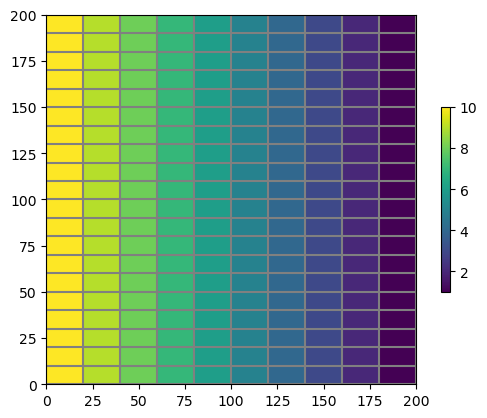
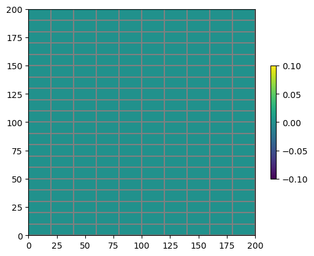

Note
This page was generated from Notebooks/flopy3_save_binary_data_file.ipynb.
Interactive online version: 
Saving array data to MODFLOW-style binary files
[1]:
import os
import sys
import shutil
from tempfile import TemporaryDirectory
import numpy as np
import matplotlib as mpl
import matplotlib.pyplot as plt
# run installed version of flopy or add local path
try:
import flopy
except:
fpth = os.path.abspath(os.path.join("..", ".."))
sys.path.append(fpth)
import flopy
print(sys.version)
print("numpy version: {}".format(np.__version__))
print("matplotlib version: {}".format(mpl.__version__))
print("flopy version: {}".format(flopy.__version__))
3.10.10 | packaged by conda-forge | (main, Mar 24 2023, 20:08:06) [GCC 11.3.0]
numpy version: 1.24.3
matplotlib version: 3.7.1
flopy version: 3.3.7
[2]:
nlay, nrow, ncol = 1, 20, 10
# temporary directory
temp_dir = TemporaryDirectory()
model_ws = os.path.join(temp_dir.name, "binary_data")
if os.path.exists(model_ws):
shutil.rmtree(model_ws)
precision = "single" # or 'double'
dtype = np.float32 # or np.float64
mf = flopy.modflow.Modflow(model_ws=model_ws)
dis = flopy.modflow.ModflowDis(
mf, nlay=nlay, nrow=nrow, ncol=ncol, delr=20, delc=10
)
Create a linear data array
[3]:
# create the first row of data
b = np.linspace(10, 1, num=ncol, dtype=dtype).reshape(1, ncol)
# extend data to every row
b = np.repeat(b, nrow, axis=0)
# print the shape and type of the data
print(b.shape)
(20, 10)
Plot the data array
[4]:
pmv = flopy.plot.PlotMapView(model=mf)
v = pmv.plot_array(b)
pmv.plot_grid()
plt.colorbar(v, shrink=0.5);

Write the linear data array to a binary file
[5]:
text = "head"
# write a binary data file
pertim = dtype(1.0)
header = flopy.utils.BinaryHeader.create(
bintype=text,
precision=precision,
text=text,
nrow=nrow,
ncol=ncol,
ilay=1,
pertim=pertim,
totim=pertim,
kstp=1,
kper=1,
)
pth = os.path.join(model_ws, "bottom.bin")
flopy.utils.Util2d.write_bin(b.shape, pth, b, header_data=header)
Read the binary data file
[6]:
bo = flopy.utils.HeadFile(pth, precision=precision)
br = bo.get_data(idx=0)
Plot the data that was read from the binary file
[7]:
pmv = flopy.plot.PlotMapView(model=mf)
v = pmv.plot_array(br)
pmv.plot_grid()
plt.colorbar(v, shrink=0.5);

Plot the difference in the two values
[8]:
pmv = flopy.plot.PlotMapView(model=mf)
v = pmv.plot_array(b - br)
pmv.plot_grid()
plt.colorbar(v, shrink=0.5);

[9]:
try:
# ignore PermissionError on Windows
temp_dir.cleanup()
except:
pass